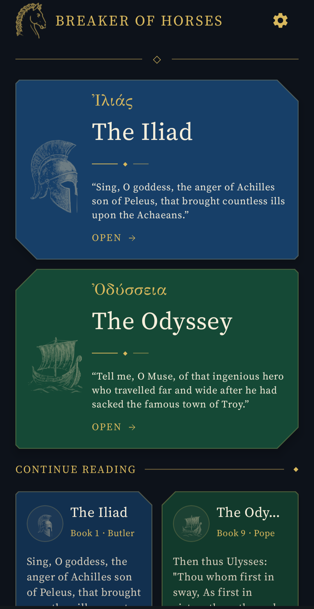
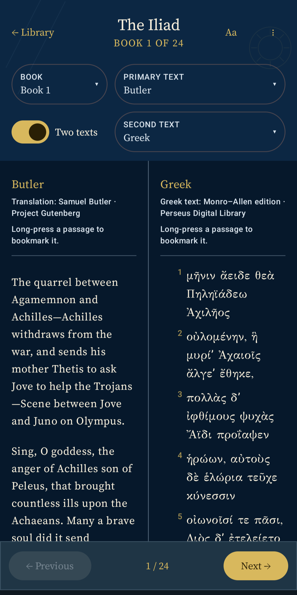
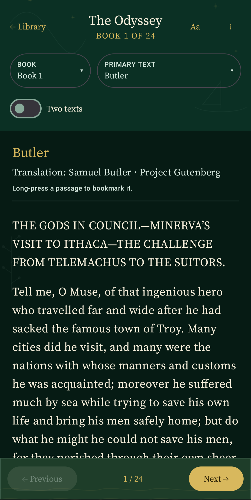
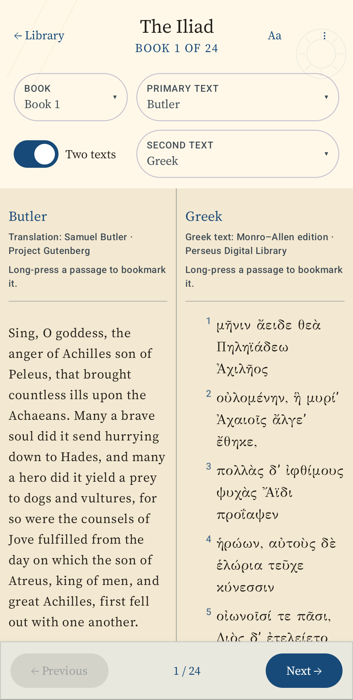
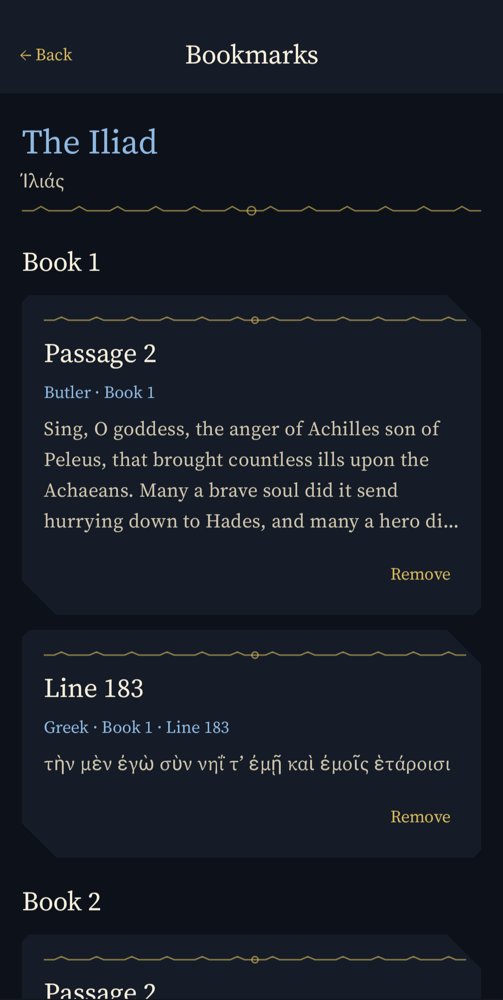
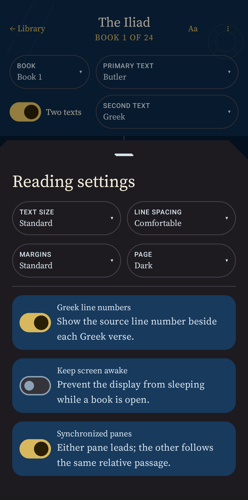

I · The Iliad
War, honor, anger.
From the quarrel of Achilles and Agamemnon to the ransom of Hector.
The complete Iliad and Odyssey in Homeric Greek and three classic English translations. Read one edition or compare two side by side, with synchronized passages and no distractions.
The complete Iliad and Odyssey included


Begin with rage beneath the walls of Troy. Continue through shipwreck, temptation, recognition, and homecoming. Your place is saved separately in each work.
From the quarrel of Achilles and Agamemnon to the ransom of Hector.
From Telemachus setting out to Odysseus reclaiming his home.


Keep Greek beside English, or compare the choices of two translators. The panes remain roughly aligned as you move through the poem.
Move between Homeric Greek and a familiar translation without losing your place.
See how Butler, Pope, and Chapman render the same speech, image, or epithet.
Return to a clean single-text view whenever comparison is no longer the point.
Choose the directness of prose, the formal music of heroic couplets, the force of Elizabethan verse, or the language of the poems themselves.
The original text from the Perseus Digital Library, with optional line numbers and a focused reading layout.
Clear, direct prose that keeps the story moving and makes a strong first reading.
Heroic couplets with grandeur, symmetry, and a commanding eighteenth-century voice.
Vigorous Elizabethan poetry, famous for its energy and verbal invention.


Adjust the typography and layout to the way you read. Search the current text, switch themes, show Greek line numbers, and return exactly where you stopped.
Adjust text size, line spacing, and margins.
Choose the reading surface that suits the hour.
Find a phrase and preserve the passages worth returning to.
Both epics and all editions are available without a connection.
Discover the lines that outlived empires. Breaker of Horses is free on Android, fully offline, and requires no account.